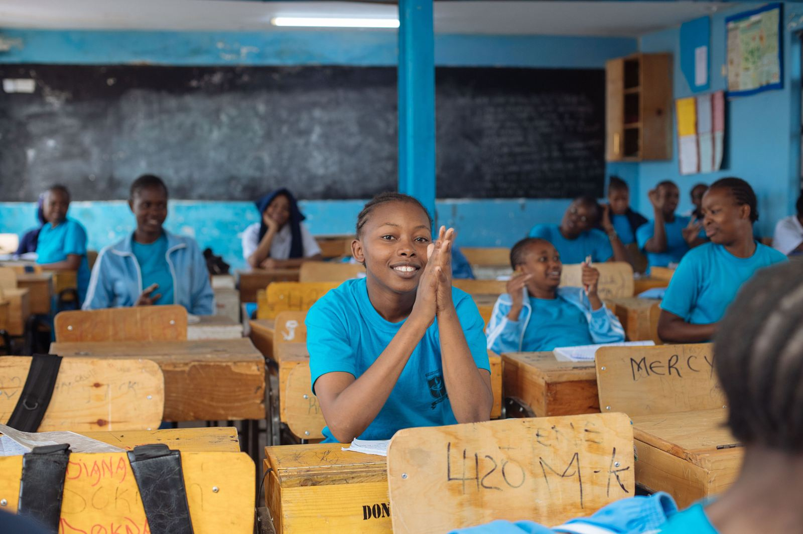

Education
EducationUshirika School Kibera
Our flagship school gives orphans and vulnerable children in Kibera a safe place to learn, from kindergarten to senior secondary.
716learners enrolled in 2024
Read more about Ushirika School Kibera

Six projects in Kibera and Nairobi’s informal settlements, from a school and a tech hub to clean water and peacebuilding.
EducationOur flagship school gives orphans and vulnerable children in Kibera a safe place to learn, from kindergarten to senior secondary.
A 12-month certificate course that trains young women in hospitality, business and technology, then helps them into work.
 Families
FamiliesSupport for orphans and vulnerable children and the people who care for them, from school supplies to help earning a steady income.
 Clean water
Clean waterSafe water points for homes and schools in Kibera, so families spend less time fetching water and stay healthier.
 Peacebuilding
PeacebuildingYoung people use theatre, sport and community forums to teach civic education and bring Kibera’s communities together.
 Digital skills
Digital skillsA tech hub where children from age 8 learn coding, robotics and AI, with a strong focus on girls.